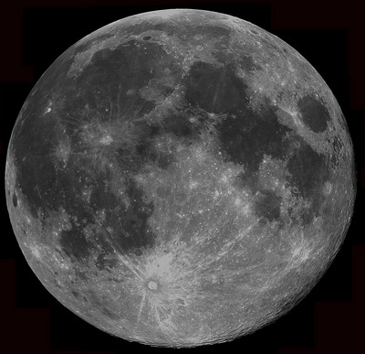
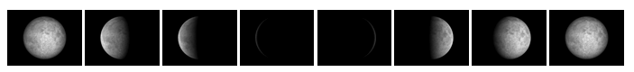

In a generic sense, any moon is a satellite that orbits a planet. In a specific sense, the Moon is the only natural satellite of Earth and the fifth largest such object in the Solar System (after Io, Callisto, Titan and Ganymede). It is the brightest object in the Earth’s sky after the Sun. It has the distinction of being the only extraterrestrial body to have been visited by humans, via the Apollo space missions. The first Moon landing, Apollo 11, occurred in July 1969 and the last, Apollo 17, in December 1972.
The Moon has a diameter of 3,475 km and a mass of 7.4 × 1022 kg. It orbits the Earth at an average distance of 385,000 km with a period of approximately 27.3 days (a sidereal month) and an orbital speed of approximately 1 km s-1. The Moon’s phases arise due to the changing geometry of the Sun-Earth-Moon system and the time taken for the Moon to complete a cycle of it’s phases is known as a synodic month, which is approximately 29.5 days.

Credit: Tim Hunter
The gravitational attraction between the Earth and the Moon gives rise to the lunar tides in the ocean. Because the oceans are fluid, along the radial line from the Earth to the Moon they contain two bulges caused by the attraction. The side closer to the Moon experiences the greatest attraction and hence the greatest bulge, while the farther side bulges because the Earth is being pulled away from it and toward the Moon. As the Earth rotates faster than the Moon’s orbital speed, two high tides occur per day, spaced by approximately 12.5 hours. The Sun also affects the tides, with the maximum (‘spring’) tides occuring during solar and lunar alignment (i.e. during the New Moon or Full Moon). When the Sun-Earth and Moon-Earth alignment is at right angles (i.e. during first quarter or last quarter phases), the bulges are weakened and the result is ‘neap’ tides.
The Moon is thought to have been formed slightly later than the Earth, which was 4.5 billion years ago. The Earth likely formed from a protoplanetary disk around the Sun. A smaller planetary body is thought to have impacted the newly formed Earth, created debris which initially orbited the Earth and later coalesced into the Moon. This hypothesis of a random event causing it’s formation could also explain why the Moon:Earth size ratio is relatively large compared with the satellite:planet sizes found in the rest of the Solar System.
